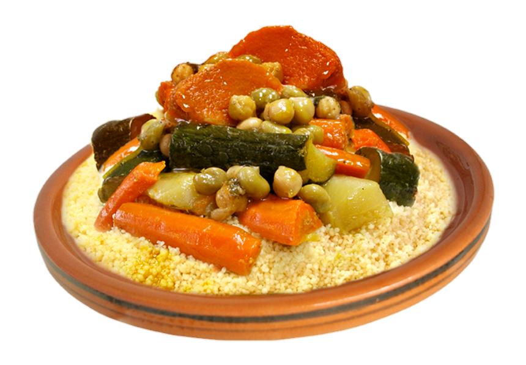

RECETTE DU JOUR
Ingrédients

- 3 œufs
- 250g de beurre
- 250g de sucre
- 250g de farine
- 1 pincée de sel
Préparation
- Blanchir le sucre avec le beurre ramolli à l’aide d’une spatule en bois jusqu’à obtenir un mélange homogène
- Ajouter les jaunes d’œufs et bien mélanger
- Ajouter la farine tamisée et mélanger
- Monter les blancs d’œufs en neige bien ferme avec une pincée de sel
- ......
Couscous Marocain
Ingrédients:

- 335 g de viande de bœuf
- 1 carotte
- 1 courgette
- 1/2 tomate
- 1 navet
- 100 g de courge
- 85 g de fèves fraîches
- 1/2 chou vert
- 65 g de pois chiches
- 1/2 bottes de persil
- 200 g de couscouss
- 65 cl d'eau
- 1 cuillère à café de gingembre en poudre
- 1 cuillère à café de safran
- 2 cuillères à café de sel
- 1 cuillère à café de poivre
- 1 pincée de pistils de safran
- 4 cuillères à soupe d'huile d'olive
Préparation:

- Préparation de légumes
- Cuisson de la viande
- Préparation de la semoule
- Ingrédients au choix
- Première cuisson de la semoule
- Saler la semoule
- Ajoutez reste de légumes et deuxième cuisson de la semoule
- Présentation finale
Sommaire